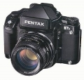
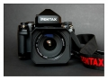

器材库 > 120中幅相机 > 67II

规格总览
产品类型
6×7片幅单反相机，可更换镜头、取景器及对焦屏
发布日期
未知
标称画幅
6 × 7cm
实际画幅
55 × 70mm
取景规格
取景范围
90%
取景放大倍率
0.75倍
对焦屏
标准为微棱磨砂对焦屏，可更换原像明亮磨砂对焦屏
反光镜锁定
有
取景器信息
曝光补偿，条码圆表，快门速度，测光模式，记忆锁，闪灯状态，胶卷格数，附有背光照明
镜头和对焦
镜头卡口
P67
镜头卡口类型
双重插刀式卡口（内外插刀环用于不同镜头系列）
曝光控制
测光系统
TTL六幅面多区域镜后测光，可设定中央偏重式或重点测光模式
测光范围
2EV~21EV
曝光补偿
±3EV以1/3EV级调整
多重曝光
有
ISO感光度
6-6400
快门
电子控制横走式焦平面快门
快门速度
B, 自动：30 - 1/1000秒, 手动：4 - 1/1000秒
快门释放
电磁控制
闪光同步速度
X快门：1 - 1/30秒；叶片快门：1 - 1/500
过片系统
过片
卷片杆转动角度190°，预备角度7°，卷片连动快门绞齿，半自动上片设有记号指示，液晶体显示胶卷前卷及卷末标志。
其它规格
机身LCD显示
电池耗尽警告，ISO胶卷速度，胶卷前卷/卷末指示，胶卷格数，闪灯状态
接口
闪光同步插孔
电池
2枚3V锂电池（CR123A）
机身尺寸
185.5×151.0×106.0mm
机身重量
1660g
jiaowei01682014-03-20 11:094.08 分
操作性 4.00功能性 4.50美观性 4.00趣味性 4.00耐用性 3.50性价比 4.50
gaozhuojingju2011-02-08 19:014.67 分
操作性 5.00功能性 5.00美观性 4.50趣味性 4.50耐用性 4.50性价比 4.50
红蕾2008-09-11 23:404.5 分
操作性 4.50功能性 5.00美观性 4.50趣味性 3.50耐用性 4.50性价比 5.00
枫叶枫叶2008-05-20 11:234.75 分
操作性 5.00功能性 5.00美观性 5.00趣味性 5.00耐用性 4.50性价比 4.00
凯文尹2007-09-29 20:394.42 分
操作性 5.00功能性 4.00美观性 3.50趣味性 4.00耐用性 5.00性价比 5.00
sjzdl2006-09-12 16:364.58 分
操作性 5.00功能性 4.50美观性 5.00趣味性 4.50耐用性 4.50性价比 4.00

zhangww2006-06-27 22:144.5 分
操作性 4.50功能性 4.50美观性 4.00趣味性 4.00耐用性 5.00性价比 5.00
猪头唛2006-05-31 21:014.33 分
操作性 4.00功能性 4.00美观性 4.50趣味性 4.50耐用性 4.50性价比 4.50
zwy33162006-04-23 12:134.58 分
操作性 4.50功能性 5.00美观性 5.00趣味性 3.00耐用性 5.00性价比 5.00
威马2006-04-07 11:014.83 分
操作性 4.50功能性 5.00美观性 4.50趣味性 5.00耐用性 5.00性价比 5.00
产品图 / 样片
宾得 67II
评测 / 相关文章
该产品暂无存档的评测文章